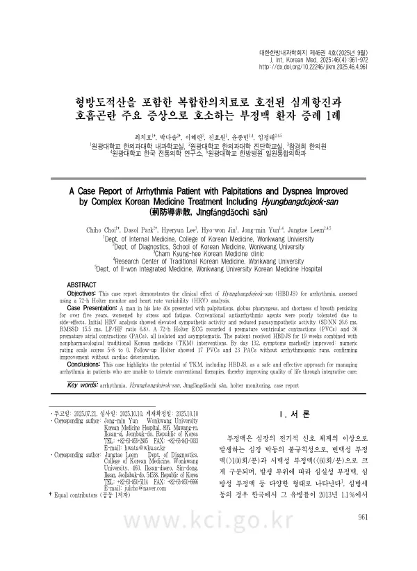

A Case Report of Arrhythmia Patient with Palpitations and Dyspnea Improved by Complex Korean Medicine Treatment Including Hyungbangdojeok-san (荊防導赤散, Jīngfángdáochì sán)
Choi C, Park D, Lee H, Jin Hw, Yun Jm, Leem J
The Journal of Internal Korean Medicine 46(4):961-972

첫 장 · 오픈액세스First page · open access
논문 소개Summary
부정맥 환자 가운데는 갈 곳이 마땅치 않은 경우가 있습니다. 항부정맥제를 먹으면 기운이 빠져 일상이 무너지고, 그렇다고 전극도자절제술 대상은 아닌 사람들입니다. 시술은 심낭압전·감염·심장천공 같은 합병증이 보고되어 있어 아무에게나 권하지 않습니다. 이런 환자는 결국 「경과를 지켜보자」는 말을 듣고 증상을 안은 채 지냅니다. 이 증례는 그런 환자 한 명의 19주 기록입니다.
40대 후반 남성으로 인후부 이물감, 심계항진, 호흡곤란을 5년간 안고 있었습니다. 5년 전 심방세동을 진단받아 6개월 약물치료 후 심방세동은 사라졌으나 심실조기수축이 남았고, 약을 먹으면 기력이 떨어져 휴직할 정도로 삶의 질이 나빴습니다. 다른 한의원에서 두 달간 치료했으나 나아지지 않았습니다. 초진 시 심박변이도 검사에서 교감신경이 과도하게 활성화되고 부교감신경은 억눌린 상태였습니다(SDNN 26.6ms, RMSSD 15.5ms, LF/HF 6.8). 72시간 홀터 검사에서는 심실조기수축 4회, 심방조기수축 36회로 임상적으로 의미 있는 이상은 없었습니다. 혈압 141/91mmHg로 1기 고혈압이었습니다.
소양인 형방도적산을 중심으로 19주간 치료하면서 침·전침·뜸·부항·적외선 치료를 함께 했습니다. 91일째 두근거림이 NRS 0~1로 거의 사라졌고, 123일째 인후부 불편감과 호흡곤란이 0이 되었으며, 132일째 모든 증상이 소실되었습니다. 심계항진 5→0, 호흡곤란 8→0, 인후부 불편감 8→0이었습니다.
증상만 좋아진 것이 아니라 나빠지지 않았음을 검사로 확인한 것이 이 증례의 핵심입니다. 치료 종료 시점에 다시 시행한 72시간 홀터에서 심실조기수축 17회, 심방조기수축 23회로, 치료 전보다 서맥 비율은 뚜렷이 줄고 빈맥 비율은 조금 늘었으나 연속 발생 없이 임상적으로 유의한 부정맥은 없었습니다. 증상이 좋아지는 동안 심장이 나빠지지 않았다는 뜻입니다.
한계도 분명합니다. 단일 증례이므로 효과를 증명하거나 일반화할 수 없습니다. 심초음파에서 구조적 이상은 없었지만 기질적 심장질환의 가능성을 완전히 배제하지는 못해, 증상이 기능성 부정맥에서 온 것인지 명확히 감별하지 못했습니다. 저자들은 증례를 더 모으고 대조군 연구와 장기 추적이 필요하다고 적었습니다. 이 보고의 뜻은 표준치료를 이어갈 수 없는 환자에게 선택지가 하나 더 있을 수 있다는 것을 검사 기록과 함께 남긴 데 있습니다.
Some patients with arrhythmia have nowhere obvious to turn. Antiarrhythmic drugs leave them so fatigued that daily life collapses, yet they are not candidates for catheter ablation — a procedure with reported complications including tamponade, infection and cardiac perforation, and so not offered to everyone. Such patients are usually told to watch and wait, and live with their symptoms. This case report follows one of them over 19 weeks.
A man in his late 40s had experienced globus sensation, palpitations and shortness of breath for five years. Atrial fibrillation diagnosed five years earlier had resolved after six months of medication, but premature ventricular contractions persisted; medication left him so fatigued that he took leave from work, and his quality of life was poor. Two months of treatment at another Korean medicine clinic had not helped. Heart rate variability at presentation showed sympathetic overactivity with parasympathetic suppression (SDNN 26.6 ms, RMSSD 15.5 ms, LF/HF 6.8). A 72-hour Holter recorded 4 premature ventricular and 36 premature atrial contractions, all isolated, with nothing clinically significant. Blood pressure was 141/91 mmHg — stage 1 hypertension.
Treatment centred on Hyungbangdojeok-san for a Soyangin constitution over 19 weeks, combined with acupuncture, electroacupuncture, moxibustion, cupping and infrared therapy. By day 91 palpitations had fallen to NRS 0–1; by day 123 globus sensation and dyspnea were gone; by day 132 all symptoms had resolved. Palpitations went from 5 to 0, dyspnea from 8 to 0 and globus sensation from 8 to 0.
The core of this report is not that symptoms improved but that deterioration was ruled out by testing. A repeat 72-hour Holter at the end of treatment showed 17 premature ventricular and 23 premature atrial contractions; bradycardia had fallen markedly and tachycardia risen slightly, but with no runs and nothing clinically significant. The heart had not worsened while the symptoms resolved.
The limitations are equally clear. A single case can neither prove efficacy nor be generalised. Echocardiography showed no structural abnormality, but organic heart disease could not be entirely excluded, so whether the symptoms were functional in origin could not be definitively determined. The authors call for more cases, controlled studies and long-term follow-up. The value of the report lies in documenting, with objective test records, that one further option may exist for patients unable to continue standard therapy.
인용Cite
Choi C, Park D, Lee H, Jin Hw, Yun Jm, Leem J. A Case Report of Arrhythmia Patient with Palpitations and Dyspnea Improved by Complex Korean Medicine Treatment Including Hyungbangdojeok-san (荊防導赤散, Jīngfángdáochì sán). The Journal of Internal Korean Medicine. 2025;46(4):961-972. doi:10.22246/jikm.2025.46.4.961